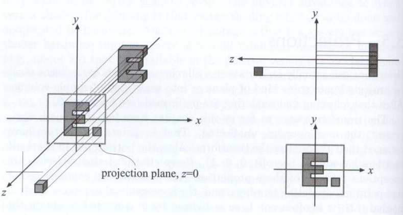
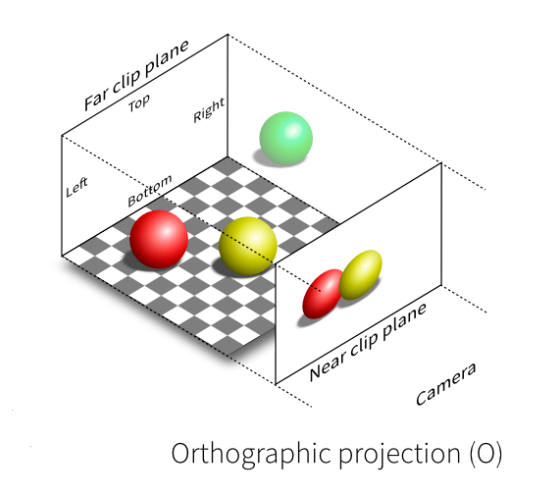
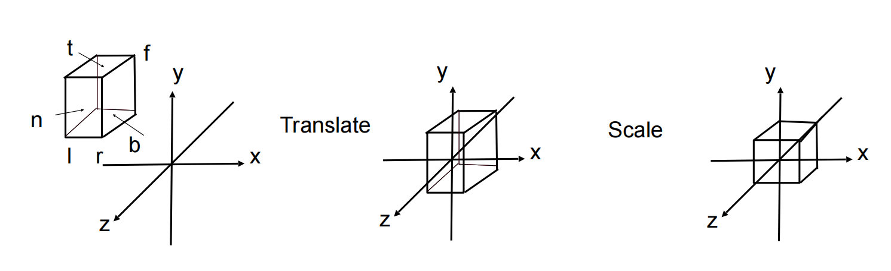

正交投影矩阵
正交投影矩阵不会有近大远小的效果，Z 轴上的数据仅仅提供前后的参考。正交投影矩阵的效果类似于三视图，更多用于工程制图当中，作用正交投影矩阵后的效果类似：
图片来自 games101
图片来自 games101
实际上 webgl 默认的渲染就是正交投影矩阵，图像是不会有远小近大的效果的，只是 webgl 的没有缩放和移动顶点数据。
正交投影矩阵用来把空间中一个立方体区域移动然后缩放到渲染空间中，webgl、OpenGL 中可视空间都在 [-1, 1] 之间，超出这个区间的图形将不会被渲染。正交投影矩阵就是把空间中的某一个区域移动缩放后和渲染空间 [-1, 1] 对齐。 例如下图：
图片来自 games101
通过上图可知，如果投影的立方体不在渲染区域中心，那么就需要对这个区域先进行位移。如果投影区域不是一个标准的棱长为 2 的正方体，就还需要对其进行缩放。所以本质上，正交投影矩阵就是一个位移矩阵加缩放矩阵的结合
依照上图，一个正交投影矩阵可以写作：
注意上面的推导使用的是右手坐标系，$n > f$。
在 gl-matrix 库中，正交投影矩阵的实现如下：
可以看到工程实现和我们的推导结果有出入，out[14] 的计算少了个负号，这有两个原因：
一是因为这个函数的 near 和 far 参数不是坐标值，是观看方向的实际距离，即 $0 < near < asd$，和我们前面推导的相反，我们可以回到上面从新带入 -n 和 -f 推导，但是一个简单的方式是直接带入 -n 和 -f 即可；
二是这个正交投影还把 webgl 中的左手坐标系转化为了右手坐标系，所以还要做成一个调换 Z 轴的矩阵。
最后这个函数表示的矩阵是：
其中，第一个矩阵是翻转 Z 轴。